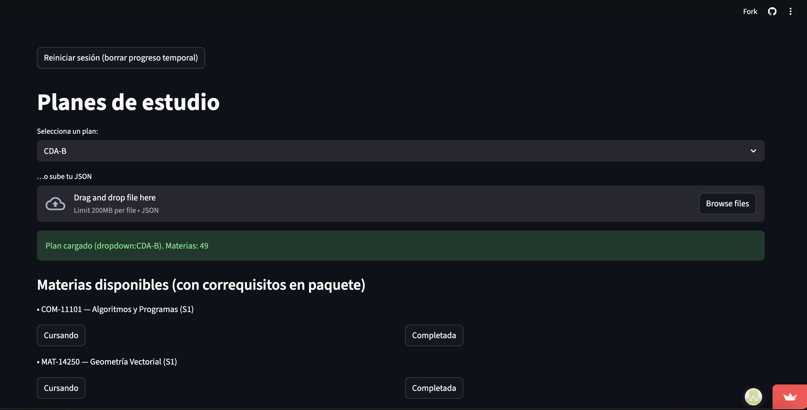

ITAM Study Plan Graphs
Streamlit web app
This app converts ITAM study plans from PDFs into structured JSON files and visualizes them as interactive prerequisite graphs. Users can select a plan, track their progress, automatically see which courses are now available, and download an updated JSON for any curriculum.